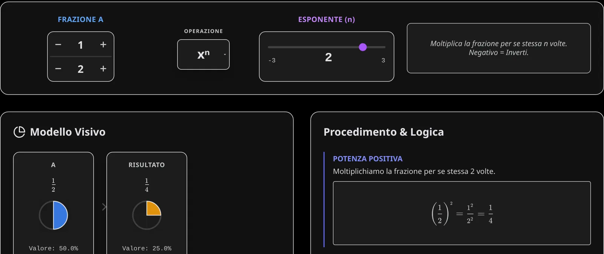

Fractions Lab: le frazioni in torte e sulla retta
Somma, differenza, prodotto, quoziente e potenza tra frazioni, viste come fette di torta e come punti sulla retta dei numeri, con il procedimento spiegato passo per passo.
Cosa è
Un laboratorio per vedere che cosa fanno le operazioni alle frazioni. Si sceglie la frazione A e la frazione B con i pulsanti $+$ e $-$ su numeratore e denominatore, si sceglie l'operazione ($+$, $-$, $\times$, $\div$ oppure la potenza $x^n$) e l'app mostra tre cose insieme:
- il modello visivo: A, B e il risultato come torte, con il valore in percentuale;
- la retta numerica, da $-1$ a $2$, con i tre punti A, B e risultato;
- il procedimento, passo per passo, con il concetto chiave dell'operazione.
Con la potenza un cursore porta l'esponente da $-3$ a $3$, zero compreso.
L'idea matematica
Per sommare servono fette della stessa misura. In $\dfrac12 + \dfrac13$ le metà e i terzi non si possono contare insieme: si passa ai sesti, perché $\text{mcm}(2, 3) = 6$.
$$\dfrac12 + \dfrac13 = \dfrac36 + \dfrac26 = \dfrac56$$
Moltiplicare invece è "prendere una parte di": $\dfrac23 \cdot \dfrac34$ sono i due terzi di tre quarti, come l'area di un rettangolo. Dividere è chiedersi quante volte una frazione sta nell'altra: dividere per $\dfrac12$ è raddoppiare. E la potenza ha due casi da vedere:
$$\left(\dfrac12\right)^{2} = \dfrac14 \qquad \left(\dfrac12\right)^{-2} = 2^2 = 4 \qquad \left(\dfrac12\right)^{0} = 1$$
L'esponente negativo inverte la frazione, "come una retromarcia", dice l'app.

Per prepararti alla verifica
- Prima di calcolare, prevedi: il risultato sarà più grande o più piccolo di A? Poi controlla sulla retta. Moltiplicare per una frazione minore di 1 rimpicciolisce, dividere ingrandisce.
- Da sapere: mcm per sommare, prodotto in croce per confrontare, reciproco per dividere, esponente negativo che inverte.
- Attenzione: non si sommano i denominatori ($\dfrac12 + \dfrac13 \neq \dfrac25$) e il risultato va sempre semplificato.
Prova tu. Calcola $\dfrac34 - \dfrac16$ e $\left(\dfrac23\right)^{-2}$. Il primo risultato è più grande o più piccolo di $\dfrac12$?
Soluzione
$\text{mcm}(4, 6) = 12$: $\dfrac{9}{12} - \dfrac{2}{12} = \dfrac{7}{12}$, poco più di $\dfrac12 = \dfrac{6}{12}$. Poi $\left(\dfrac23\right)^{-2} = \left(\dfrac32\right)^2 = \dfrac94$.
Mettiti alla prova su carta
Verifiche dell'Archivio con esercizi sugli stessi temi. Prova a farle con carta e penna, senza l'app: è lì che si vede se hai capito.
- Verifica di maggio 2026: Proprietà delle potenze, Frazioni e percentuali, Proporzioni in elettrotecnica… Apri il PDF
- Verifica di marzo 2026: Pemdas, Numeri interi e relativi, Proprietà delle potenze, Numeri razionali, Proporzioni e percentuali… Fila A · Fila B
Come usarla in classe
Alla LIM si fissa A e si cambia solo B, un passo alla volta, chiedendo alla classe di prevedere dove finirà il punto arancio del risultato sulla retta: è il modo più rapido per accorgersi che $\dfrac12 \cdot \dfrac12$ è più piccolo di $\dfrac12$. Con la potenza si trascina il cursore da $3$ a $-3$ e si guarda la torta riempirsi e poi "uscire" dall'intero quando l'esponente diventa negativo.
Il procedimento a destra si può copiare sul quaderno così com'è: è lo stesso che si scrive in verifica. Per allenarsi: Frazioni e Proprietà delle potenze; la scheda da stampare riassume regole ed esercizi.
A cosa fare attenzione
- Somma dei denominatori: è l'errore più tenace, e la torta lo smonta meglio di ogni regola.
- Denominatore zero: l'app lo segnala come divisione per zero; vale la pena chiedere perché.
- Percentuale e frazione: la torta mostra anche il valore in percentuale, un ponte naturale verso il Percent Lab.